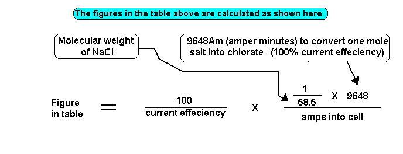

The formula gives the run time's for a Sodium Chlorate cell, based on the number of amps and the total amount of Chloride that you have added to the cell. When this run time is used you will not get all of the Chloride converted into Chlorate. The time is calculated such that there will be about 100g/l of salt left in the electrolyte when the run is complete.
100g/l of NaCl is a lower limit for industrial set up and you may wish to run your cell to lower concentrations of Chloride. CE and Anode erosion are the main factors to consider when deciding what level to reduce the Chloride to. See the Anode section for sensible lower limits. The total amount of salt
in the cell minus the amount you are not going to convert is called the
'available Chloride'.
The higher the current efficiency the shorter the run times.
If you are using salt solution (recommended if you are going to take out a crop of solid chlorate) to top up your electrolyte, it simply means that you will have to recalculate your run time each time you add some solution taking into account the extra salt that you have added to the cell. If the cell has a lid this will not be realizable as there will not be enough evaporation.
| Figure in minutes(decimal) per ('available')gram NaCl for different current efficiency's | |||||
|---|---|---|---|---|---|
| Amps | 40% Current efficiency | 54% current efficiency | 60% current efficiency | 80% current efficiency | |
| 2 | 206.25 | 152.70 | 137.43 | 103.07 | |
| 4 | 103.07 | 76.35 | 68.72 | 51.54 | |
| 8 | 51.54 | 38.16 | 34.36 | 25.77 | |
| 10 | 41.23 | 30.54 | 27.48 | 20.61 | |
| 15 | 27.49 | 20.36 | 18.32 | 13.74 | |
| 20 | 20.61 | 15.27 | 13.74 | 10.31 | |
| 30 | 13.74 | 10.18 | 9.16 | 6.87 | |
| 50 | 8.25 | 6.12 | 5.50 | 4.12 | |
| 75 | 5.50 | 4.07 | 3.66 | 2.75 | |
| 100 | 4.12 | 3.05 | 2.75 | 2.06 | |
| 150 | 2.75 | 2.04 | 1.83 | 1.374 | |
| 200 | 2.06 | 1.53 | 1.37 | 1.031 | |

HIT THE BACK BUTTON ON YOUR BROWSER